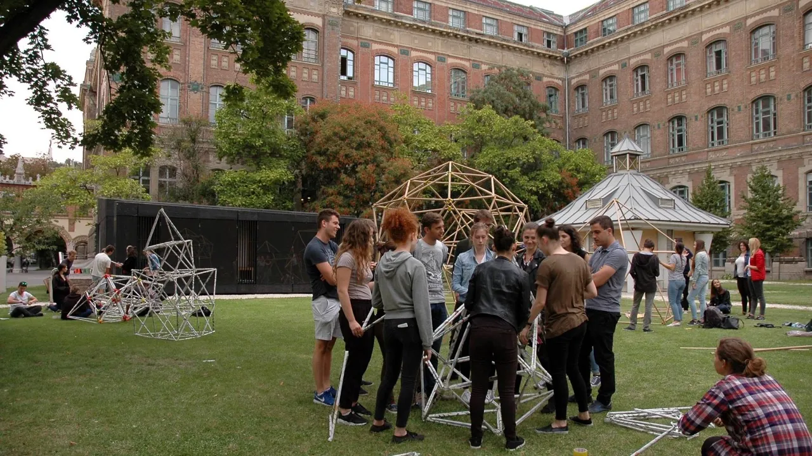
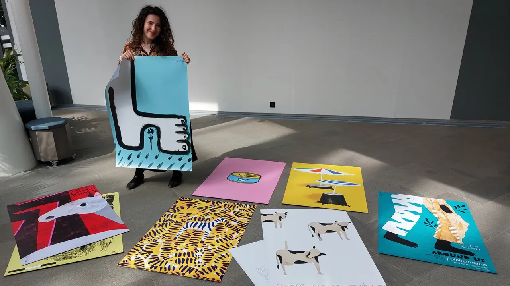

A master's in Hungary takes two years and 120 ECTS and is taught in English. Hun Education's published range is €4,000 to €6,000 a year; across the catalogue the actual figures run wider, from about €3,200 to €14,000 depending on the university and the field. Admission expects a recognised bachelor's degree in a related field and usually IELTS 6.5. Applications close between April and June for the September intake, and several programmes also take a February intake.
Who a Hungarian master's suits

Three profiles come to us most often, and the answer differs for each.
- Specialising after a bachelor's at home. The most common case, and the most straightforward: a related bachelor's plus IELTS 6.5 is usually the whole requirement.
- Adding an EU qualification to an existing career. Works well in business, IT and engineering management, where the master's is the credential rather than the training.
- Moving toward a doctorate. Hungarian master's programmes are thesis-based, which makes the step into a PhD programme a continuation rather than a restart.
Fields, fees and duration




Master's-level programmes in our catalogue concentrate in four areas. The full filterable list is in the course catalogue.
| Field | Example programmes | Annual fee |
|---|---|---|
| IT and engineering | Software Engineering MSc, Engineering Management MSc | €4,000 – €6,000 |
| Business and finance | Finance MSc, Business MSc | €4,000 – €6,000 |
| Humanities and social sciences | Psychology MA, English Studies MA | €7,800 – €9,400 (psychology) |
| Health sciences | Programme-dependent; entrance assessment applies | varies |
Entry requirements and applying

| Requirement | Detail |
|---|---|
| Bachelor's degree | Apostilled, in a related field; final-year students can pre-apply with a student certificate |
| Transcript | English or sworn translation, with the credit breakdown |
| English | IELTS 6.5 or equivalent; some universities accept their own test |
| CV | English, Europass preferred; weighs more than at bachelor's level |
| Motivation letter | Required by many programmes, and the piece most often written too late |
| Interview | Applied by some programmes, usually online |
Fees and duration
The published range is €4,000 to €6,000 a year, and that is where most programmes sit. Psychology is higher, from €7,800 at Pécs to €9,400 at ELTE. Adding living costs, a realistic total is €9,000 to €15,000 a year, moving mostly with your accommodation choice.
How the application runs
Eligibility check
We compare your bachelor's content against the programme's prerequisites and tell you where a credit gap would block admission.
File and motivation letter
The letter is prepared with you rather than for you; programmes notice generic text.
Submission and interview
The application goes through the university's own system, and we prepare you for the interview where one applies.
Offer, payment, visa
Conditional offer, then the final Acceptance Letter after payment, which is the core document for the student visa.
Frequently asked questions
Two years for most taught master's programmes, worth 120 ECTS. A small number of specialised programmes run to three semesters.
IELTS 6.5 or an equivalent certificate is the common requirement, above the B2 expected at bachelor's level. Some universities accept their own online language assessment instead.
Sometimes, and it depends on how far the switch goes. A related move is usually workable with the right motivation letter; a move into an unrelated technical or health field normally requires prerequisite credits. We check the specific programme's rules before you apply.
Yes. Taught master's programmes in Hungary end in a written thesis and its defence, and the thesis normally carries a substantial share of the final classification.
Sources and verification
- Programme, fee and admission details are compiled from the universities' current published conditions and reviewed before each application period.
- Credit equivalence and prerequisite decisions rest with the admitting university.
- Recognition of the completed degree is decided by the competent authority in your own country.
Change log
- : Content passed editorial and SEO review; source statements updated.
- : Page published; fee ranges, application calendar and entrance exam requirements written from current data.